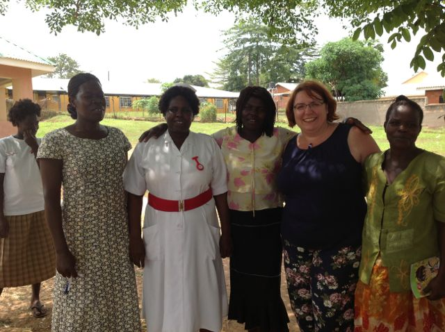
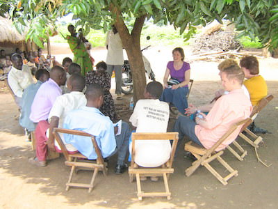
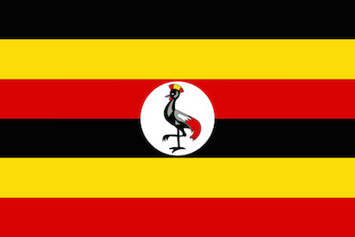

<div class="row">
  <div class="col-md-10 col-md-offset-1">
    <div class='alert alert-success text-center'>
      <a href="/sponsor.html"><strong>Support us by sponsoring Greg to do the Three Peaks Challenge!</strong></a>
    </div>
    <blockquote>
      <p class=''>
      Sheffield Health International Partnerships (SHIP) is a group of Sheffield health workers who are working with partners in Uganda.
      </p>
    </blockquote>
    <h3>Our partnerships</h3>
    <div class="media">
      <a class="pull-left" href="/gulu.html">
        
      </a>
      <div class="media-body">
        <h4 class="media-heading"><a href="/gulu.html">Sheffield–Gulu Mental Health Partnership</a></h4>
        <p><a href="/gulu.html">The Sheffield-Gulu mental health link is a multi-sector partnership that encompasses statutory, voluntary and private organisations in both the UK and Gulu- working towards the agreed aim of improving mental health support for people in both cities.</a></p>
      </div>
    </div>
    <div class="media">
      <a class="pull-left" href="/teso.html">
        
      </a>
      <div class="media-body">
        <h4 class="media-heading"><a href="/teso.html">Sheffield–Teso Health Link</a></h4>
        <p><a href="/teso.html">Sheffield–Teso Health Link is a multidisciplinary healthcare partnership  between Sheffield, UK and Kumi district in Eastern Uganda. Through this link we seek to provide inspiration, promote initiative, foster understanding and facilitate change for the mutual benefit of healthcare in the UK and in Uganda.</a></p>
      </div>
    </div>
    <div class="media">
      <a class="pull-left" href="/hugs.html">
        
      </a>
      <div class="media-body">
        <h4 class="media-heading"><a href="/hugs.html">Health Uganda Group Sheffield (HUGS)</a></h4>
        <p><a href="/hugs.html">HUGS is a group of Ugandan people living in Sheffield who support the work of the Sheffield Health International Partnerships (SHIP).</a></p>
      </div>
    </div>
  </div>
</div>